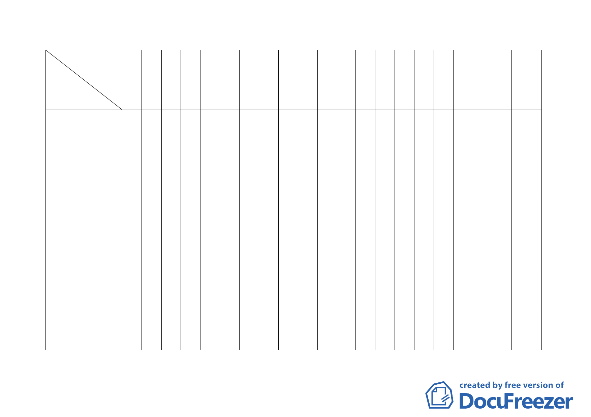

委員
案名
張 張 廖 黃 黃 蘇 顏 邊 陳 蔡 錢黃陳 張 陳 林 歐 林 紀 備
委 委 委 委 委 委 委 委 委 委 委呂委 委 委 委 委 委 委 註
員 員 員 員 員 員 員 員 員 員 員委員 員 員 員 員 員 員
桂 樞 洪 書 武 瑛 愛 泰 武 淑 學員鴻 章 威 志 晉 聖 聰
承辦人
林 鈞禮達敏靜明正瑩陶錦明得仁盈德忠吉
茹
6. 變更臺北市南港區南
港路以南、縱貫鐵路以北
南港輪胎工廠及附近土
地工業區為特定專用區
主要計畫案。
7.變更臺北市文山區指
南里、老泉里部分保護區
為休閒產業特定專用區
都市計畫案
8.變更台北市文山區景
美溪左岸老泉里附近地
區主要計畫案
9.變更臺北市中正區中
正二九七號公園用地（寶
藏巖寺古蹟周邊地區）為 ○
保存區主要計畫及細部
計畫案（第一階段）。
10.變更臺北市北投區行
義路一小段四九地號等
保護區為溫泉產業特定
○
專用區都市計畫案
※ ○ ○ ○ ○ ○ ○ ○○
○○
○
○○○※○
※○○
○○ ○
○○ ○
○○※○○○○○
○○
※○○
○○○○
○
9 位 謝佩砡
○ 11 位 謝佩砡
7 位 陳福隆
11 位 張蓉真
9 位 謝佩砡
參加專案小組數
5 0 7 6 6 8 4 7 8 8 3 98 8 0 1 0 1 0
一一